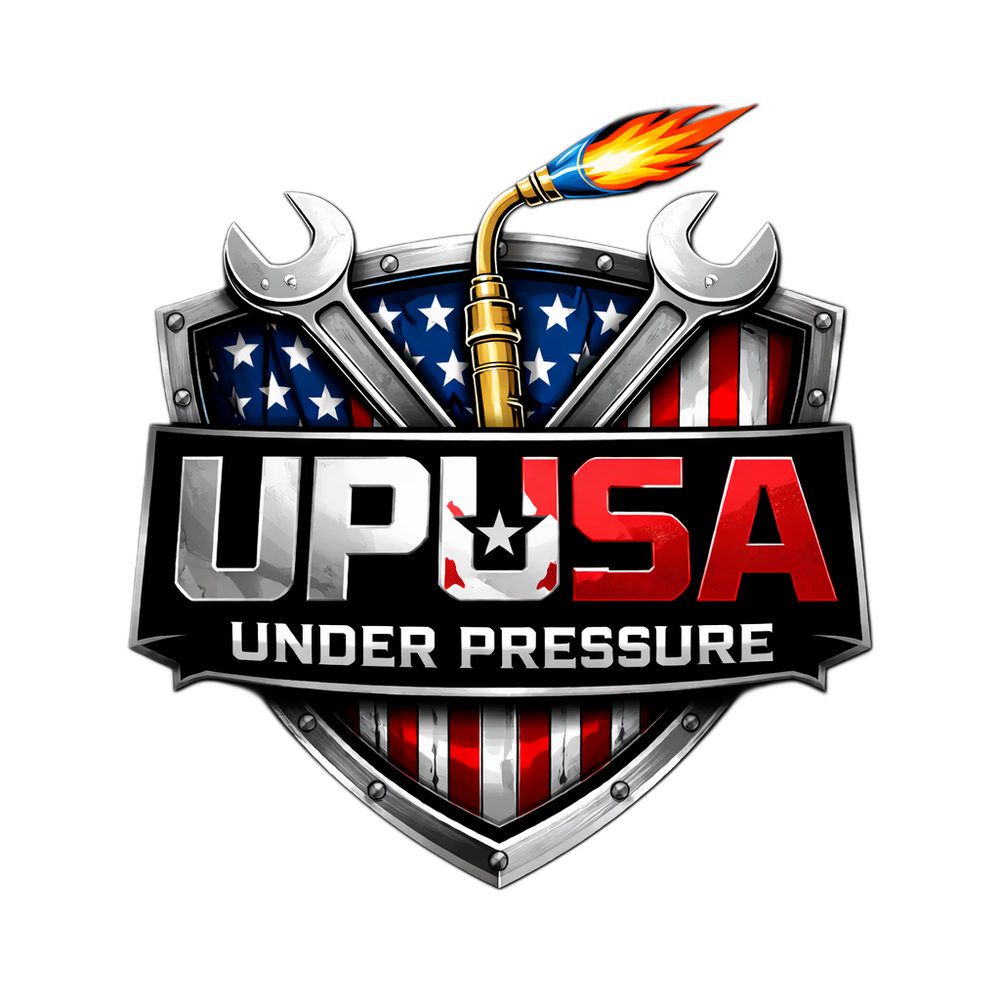
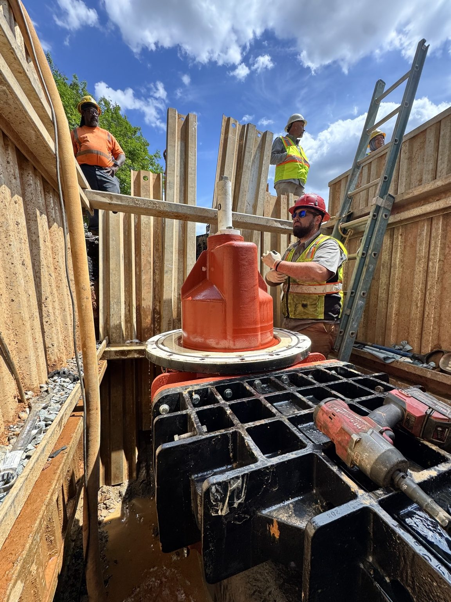
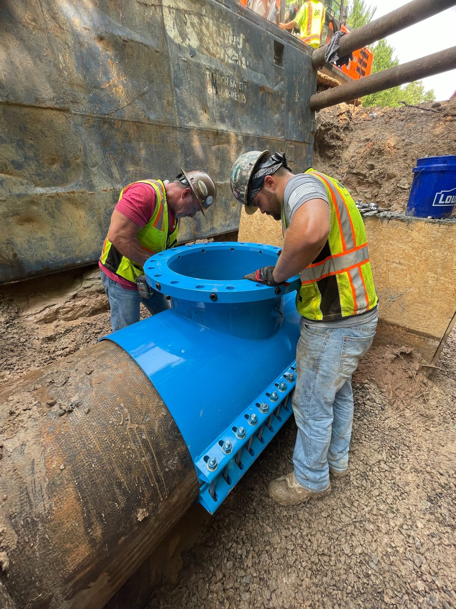
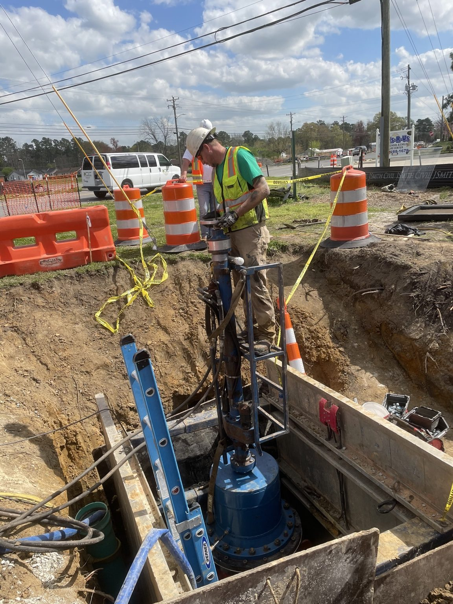
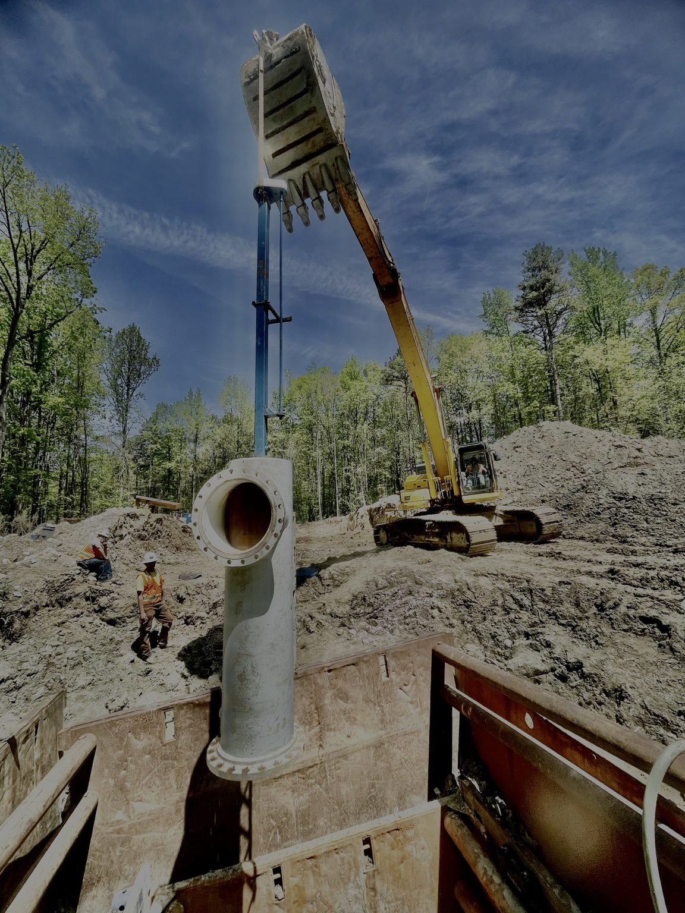
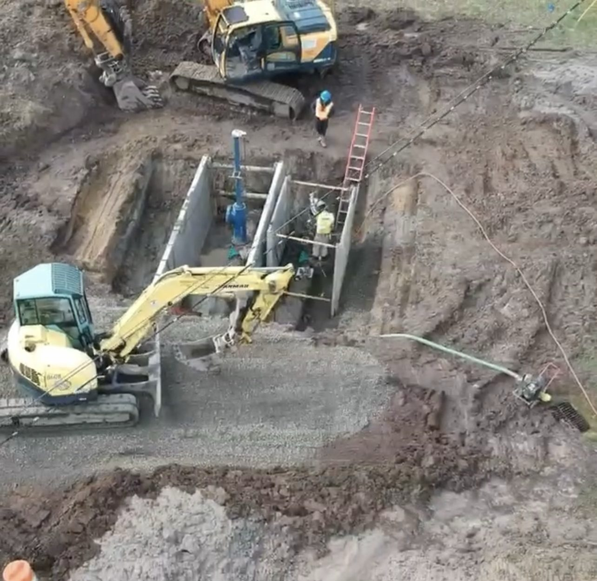
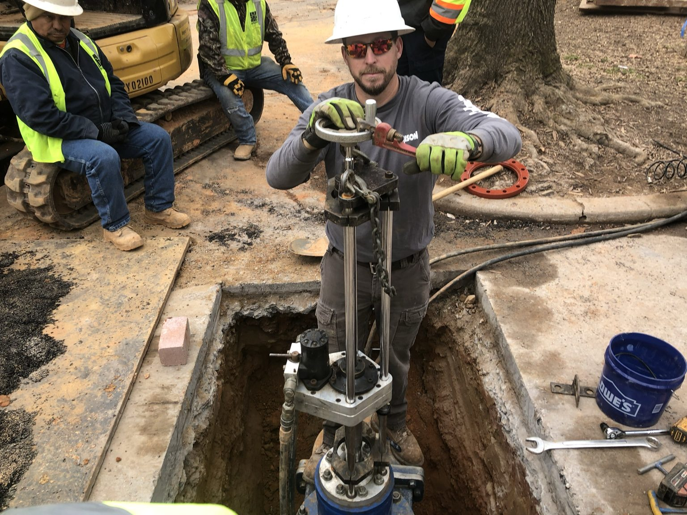

Underground
Educational documentaries about the history, materials, failures, and evolution of underground infrastructure.

Real crews. Real infrastructure. Real stories.
Most people never think about the infrastructure beneath their feet — until it fails. Under Pressure USA uncovers the history, engineering, and real people who keep our communities running through documentaries, field stories, and nearly three decades of hands-on experience.
Beneath every city is a story
Under Pressure USA began as a way to show the world the niche business of hot taps, line stops, and valve inserts. It has grown into something bigger: telling the story of underground infrastructure, the history behind it, and the crews who keep it operating.
Under Pressure Underground
Explore the history, engineering, materials, failures, and evolution of the infrastructure beneath our feet. This player automatically follows the newest episode added to the Underground playlist.
Season 1
Start with the newest episode, or open the full Season 1 playlist and work your way through the story of underground infrastructure.
Watch Season 1 on YouTube →The Why Behind the Work
A training series built around the reasoning behind the work — not just the steps. The newest training episode is pulled automatically from The Why Behind the Work playlist.
Training Series
Learn the reason behind the procedures, decisions, and habits that separate simply doing the work from understanding it.
Watch the Training Playlist →What we do
Educational documentaries about the history, materials, failures, and evolution of underground infrastructure.
Training focused on why the work is done the way it is — the reasoning, decisions, and field knowledge behind the procedure.
Conversations with the people behind the work — real stories, shop talk, and the crew side of the industry.
Real jobsite footage showing hot taps, line stops, valve inserts, equipment, and the scale of the work.
In the Field
Every image comes from actual field work — the dirt, the equipment, the crews, and the systems that keep water moving.

A 20-inch valve insert being installed on a live water main. Valve insert technology allows a new permanent valve to be added without taking the pipeline out of service, reducing customer outages while improving future maintenance options.

A line stop sleeve is installed on a pressurized water main before a temporary line stop is performed. It creates the connection point needed to isolate a section of pipeline.

John installs a valve insert on a live water main. This process adds a permanent valve without taking the pipeline out of service, reducing outages and improving reliability.

Large-diameter water systems require planning, equipment, and coordination that most people never get to see from street level.

Sometimes the only way to appreciate the scale of underground infrastructure is from above.

Meet John
Under Pressure USA started as a way to show people the niche work involved in hot taps, line stops, and valve inserts. Over time, it turned into a larger mission: telling the story of the infrastructure beneath every city.
Through documentary-style videos, field footage, and real-world experience, Under Pressure USA gives viewers a look into a world they rarely get to see.
More Than Underground
Under Pressure USA explores the hidden world beneath our feet. It’s John Hamling follows the everyday moments above ground — one simple question at a time: What do I get to do today?
Truck washes, mowing, coffee, lunch, errands, and the small routines that make up a real day.
Short, honest videos built around ordinary moments rather than staged scenes or forced lessons.
Find John Hamling on Facebook, Instagram, TikTok, and Threads as @ItsJohnHamling.
Gear I Actually Use
Jobsite essentials, truck gear, filming equipment, and other products I use, have bought for my crews, or genuinely recommend.
As an Amazon Associate I earn from qualifying purchases.
Browse the gear in one place, including the products featured in upcoming blue-collar gift guides.
View My Amazon Picks →Follow the journey
Watch the documentaries, follow the field stories, and connect with Under Pressure USA across social media.
Listen & Watch
Under Pressure USA brings the hidden world beneath our feet to life through documentaries, field stories, and conversations from the people who build and maintain our infrastructure.